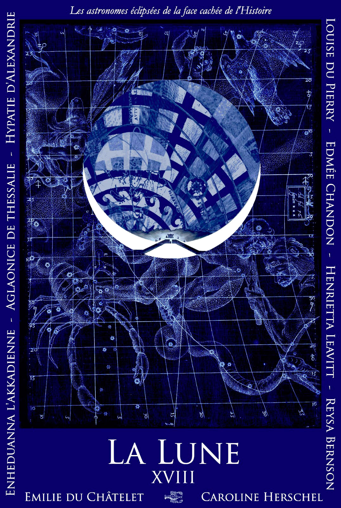
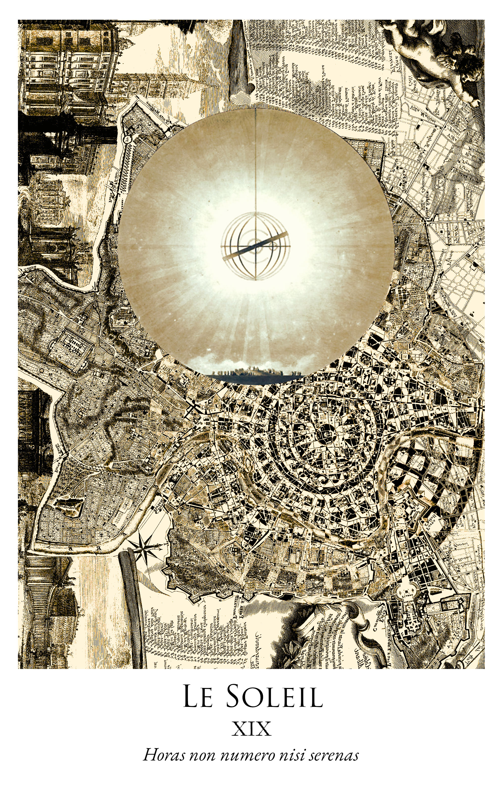
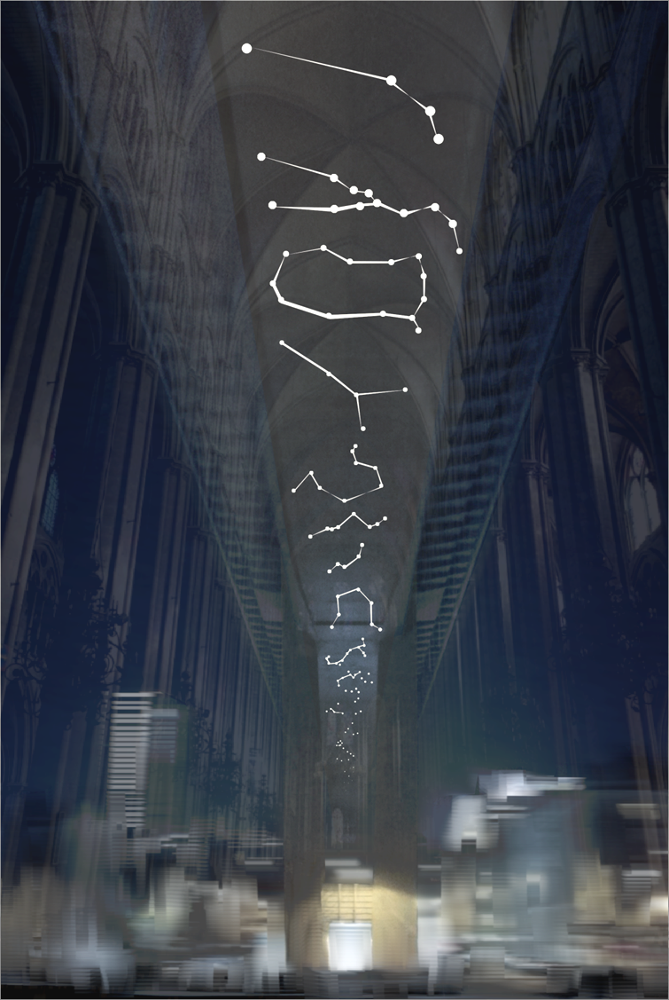

Innovation, direction artistique, campagnes d'influence
J'ai travaillé pour EDF, Publicis et l'Observatoire de Paris - PSL
Diplômé de Sciences Po, du CELSA et de Sorbonne Université

Le projet KEPLER consiste à transformer en un monument le viaduc Nuselsky de Prague, qui relie le centre historique au nouveau quartier Sud. La projection des 12 constellations du zodiaque sous ce pont soviétique le transformera en un monument à la gloire de Johannes Kepler dont la tombe a disparu durant la guerre de trente ans.
Version moderne de l’horloge astronomique place de la Vielle-ville, KEPLER donnera une image plus positive de ce pont en béton, et glorifie le passé scientifique de Prague, ville historique des grandes découvertes sur l’Univers, depuis Kepler et son maître Tycho Brahe jusqu’à Albert Einstein.
En août 2021, j’étais guide touristique à la tour Eiffel. En montrant la liste des 72 savants qui orne le premier étage du monument, j’ai remarqué qu’aucun nom de femme n’y figure. Le 26 janvier 2026, Isabelle Vauglin de l’association Femmes & Sciences remettait à la maire de Paris Anne Hidalgo une liste de 72 savantes qui seront inscrites elles aussi en lettre d’or sur notre monument national. Voici l’histoire de 5 ans de combat pour la visibilité d’une histoire des sciences au féminin. Tout commence avec l’association Défis Sorbonne dont j’ai été élu président en 2021, et avec laquelle nous avons porté une première version du projet intitulée “Les 40 soeurs d’Hypatie”, proposant d’inscrire 40 noms de femmes scientifiques au deuxième étage de la tour Eiffel. Très vite nous avons obtenu le soutien de Femmes & Sciences et de la présidence de Sorbonne Université, où nous avons créé un comité de recherche pluridisciplinaire pour proposer des noms de femmes : sous la direction de la chercheuse Sandrine Aragon, le Comité Hypatie a réuni de manière paritaire des experts des trois facultés de Sciences, Lettres et Médecine de Sorbonne Université.